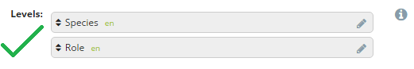
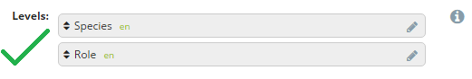

6. Forms: Option Sets¶
The Option Sets page is where the answers for Select One (ex. “What color is your shirt?”) and Select Multiple (ex. “What kinds of food do you like?”) question types can be created. Click the Option Sets menu on the main menu bar to create or edit existing Option Sets.
6.1. Create New Option Set¶
Click Create New Option Set link available from the Option Sets menu. Option set settings appear:

In the box marked Name, create a unique name that summarizes the Option Set being created.
- Observer users will not be able to view this name
If this Option Set represents geographic information, check the box labeled Is Geographic? (i.e. a set of provinces or regions). Responses that are geographic can also appear on the map in the Dashboard, even if SMS-based.
- If the options contain coordinates, check the box labeled With Coordinates?
If this Option Set needs multiple levels, check the box labeled Is Multilevel? (i.e. example that is non-geographic like the example below?). See more information on Multilevel sets below.
- Click add level to add a level
- Type the name of the level (i.e. province or region)
- Click Save
Enter the different options for the option set in the box labeled Options
In the Options box, add existing options by typing them and clicking Add. If an option in the drop down menu is not visible, add a new one by clicking Create New Option
- The Options box allows multiple options to be typed at once and added or created together by separating option names by commas. Conclude by clicking Add
Click Save
Multilevel option sets. Checking the Is Multilevel? box allows for the use of hierarchically organized options. For example, if the question is Where do you live?, you may want to allow for the selection of a certain Country (a level) that always contains a set number of Provinces or States (another level) which have certain Cities within each (one more level):
Country: United States-> Province/State: Georgia-> City: Atlanta or
Country: Democratic Republic of Congo -> Province/State:Nord-Kivu -> City: Goma
At this time, Multilevel Option Sets can only be used for Select One type questions.
To create a Multilevel Option Set:
Check the box labeled Is Multilevel?
Click Add Level
Type the name of the level and click Save
Repeat step 3 until all levels have been created
Click and drag levels so that the first level is at the top and the last level is at the bottom. Do not indent levels:
 [
[Add options
Click and drag options so that options of any level below the first are beneath and indented to the right of the options of the level they are within.
Click Save
In the above example, Species is the first level of the hierarchy and Role is the second. Human, Dog, and Cat are options of Species, and Mom, Dad, Brother, and Sister are options of Role. Note that Dog and Cat do not have options on the Role level. Also note that when using a Tablet, the user must first choose an option at the Species level before swiping to the next page to view the available options at the Role level.
Option Sets can also be created with spreadsheet software, like Excel, and uploaded directly into ELMO:
- Outside of ELMO, create a CSV or XLS file
- In the first row, include the name for each level as an individual column header(e.g. Company | Department | Name ).
- Add the names of the options

- In ELMO, click on the Option Set menu
- Click Import New Option Set
- Create a Name for the option set
- Choose the CSV or XLS file created in steps 1-3
- Click Import
- If the option set is really large, the upload may be sent to Operations Panel. You will be able to work on other tasks while the upload continues in the background. You can also click on the Operations link to check if your upload was successful
6.2. Edit existing Option Set¶
- Click the Option Sets menu
- Click the Option Set requiring editing by selecting the corresponding Pencil icon
- Click Save
Note that if you wish to edit a large option set imported via CSV or XLS file, you cannot directly edit the options in ELMO. You will need to edit the original file and import it again. The edited file should be imported under a different name, as importing it under the same name will create another option set with the same name, which could lead to confusion. For example, if an option set was imported and named LOS, the edited option set should be imported under the name LOS #2 or something similar, because naming it LOS will result in a second option set named LOS being created, not the replacement of the first one.
6.3. Import Standard Option Set¶
- Click Import Standard Option Sets
- Click the boxes next to the option sets to be imported
- Click Import
6.4. Importing large option sets¶
- Click Import New Option Set
- Type a name for your option set in the box
- Click Choose File
- Select an XLS or CSV file
- Click Import
6.5. Upload a Large Geographic Option Set¶
To upload a large geographic option set:
Outside of ELMO, create a CSV or XLS file
In the first row, include the name for each level as an individual column header with “Coordinates” as the last column (e.g. Province | City | District | Coordinates )
Add the name for each level
In the column for “Coordinates,” include both latitude and longitude in decimal format separated by a comma (e.g. 0.054396, 18.259688)
NOTE: To find latitude and longitude coordinates in decimal format:In Google Maps:1. Open Google Maps2. Right-click the place or area on the map3. Select What’s here?4. A card appears at the bottom of the screen with more infoIn ArcGIS: Please view Appendix
Example:
Country | State | City | Coordinates
USA | GA | Atlanta | 33.747082, -84.380101

- In the mission you are working on, click on the Option Set menu
- Click Import New Option Set
- Create a Name for your option set
- Choose the CSV or XLS file you created
- Click Import
- If the option set is really large, the upload may be sent to
Operations Panel. You will be able to work on other tasks while the upload continues in the background. You can also click on the Operations link to check if your upload was successful.
6.6. Language translations¶
Options within an Option Set can be translated in a manner similar to translating questions. To translate an option:
- Either create a new option set and add options or edit an existing option set
- Click the Edit icon adjacent to the option to be translated
- Type the translation in the box next to the language being translated to
- Click Save
- Note that the two-letter language code for every existing translation appears next to the option name
- Click Save